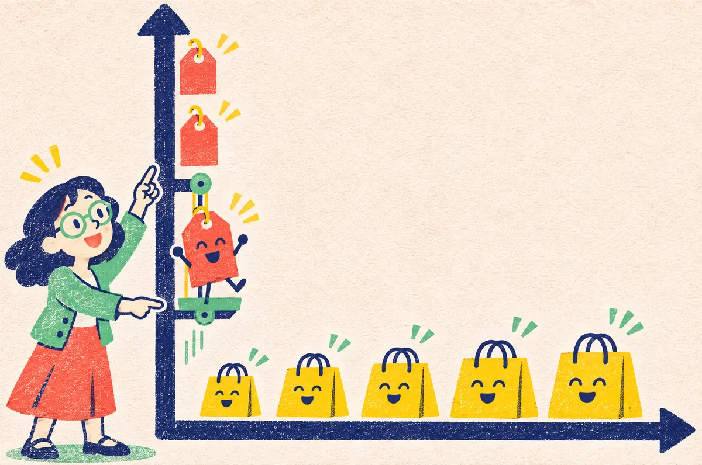
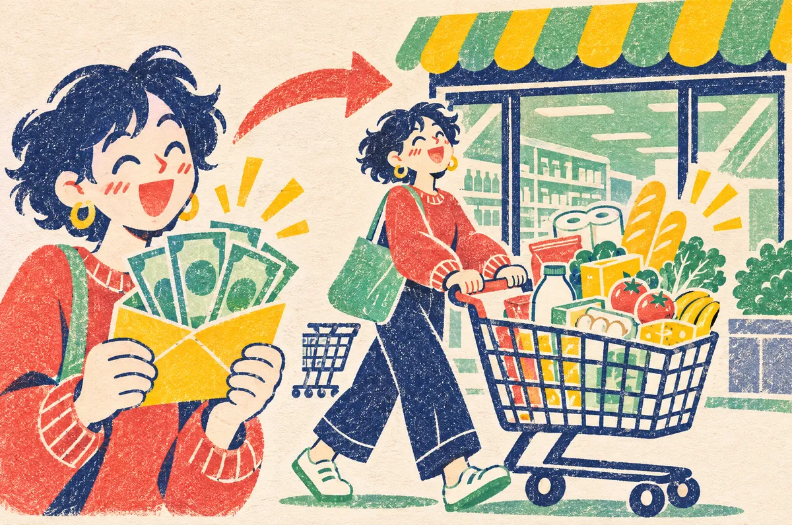
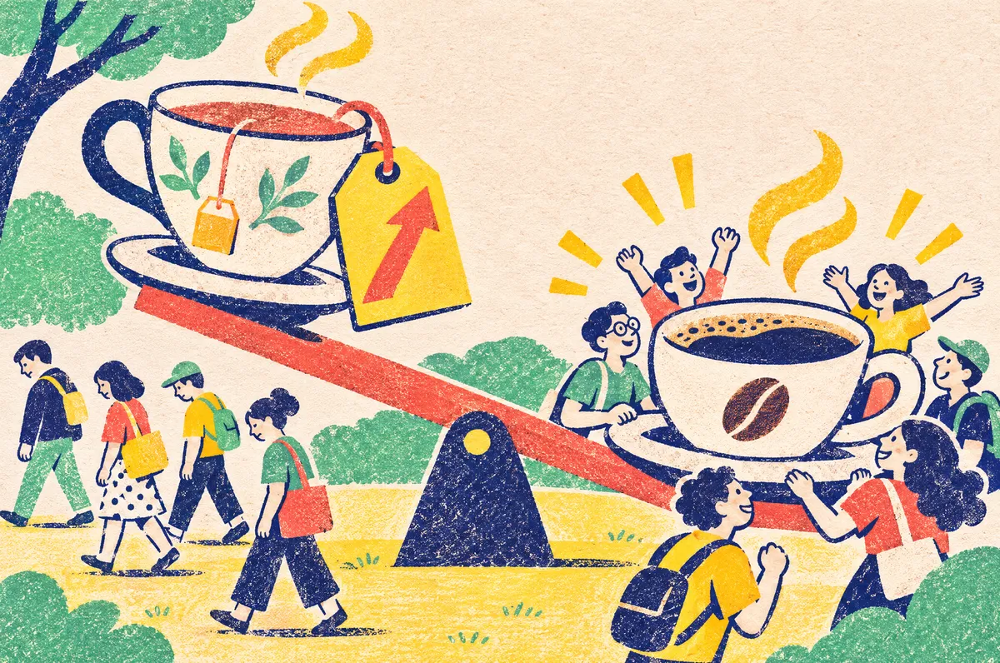
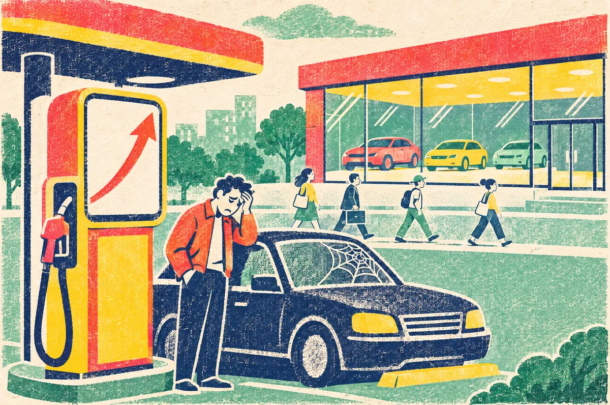
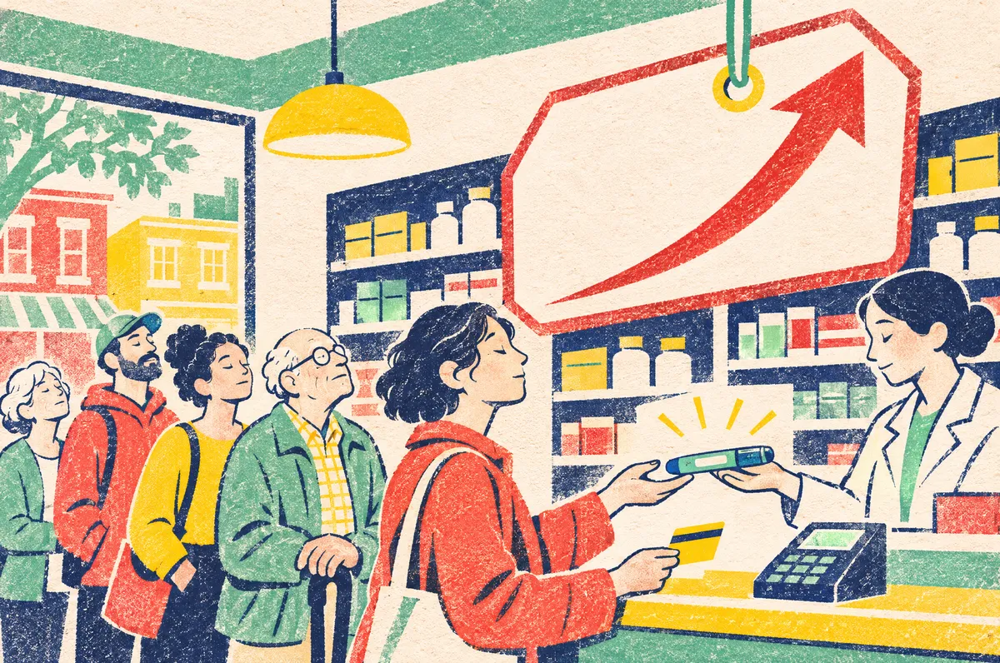
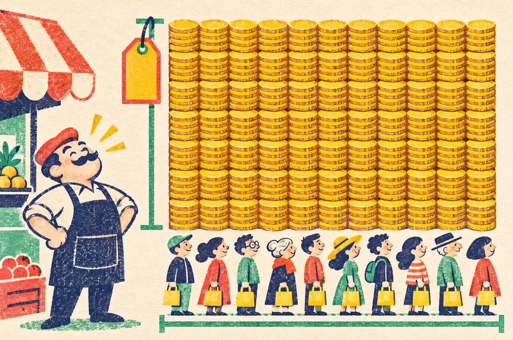
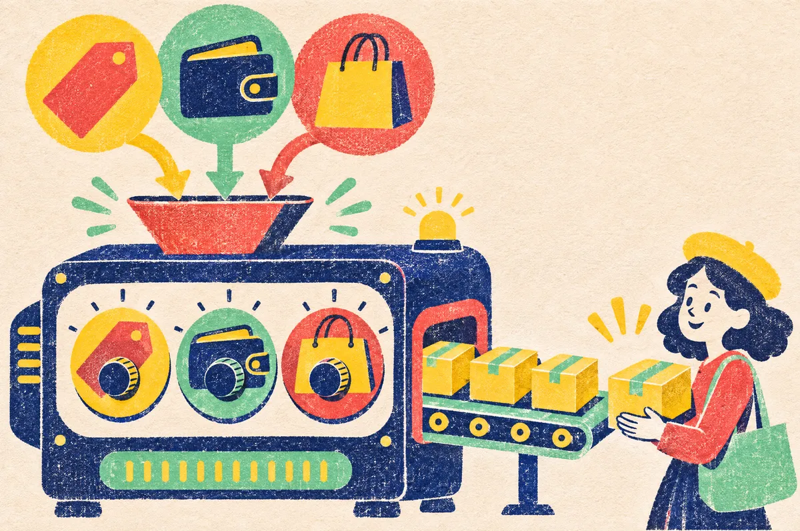

למה כשמשהו מתייקר,
קונים ממנו פחות?
כל השיעור הזה הוא בעצם תשובה אחת לשאלה הזאת, ועוד שאלה אחת: בכמה פחות. נתחיל מאפס, בלי מושגים מוכרים מראש, ונבנה הכל צעד אחרי צעד עם דוגמאות מהחיים.
צפו קודם: כל השיעור בדקה וחצי
1:34 דקות · עם קריינות וכתוביותתמליל הסרטון
למה כשמשהו מתייקר, קונים ממנו פחות? ובעיקר, בכמה פחות? זה מה שנלמד היום.
דמיינו שאתם במדבר. בקבוק המים הראשון שווה לכם הון. השני, קצת פחות. והחמישי? אתם כבר בקושי צריכים אותו.
זה הביקוש: ככל שהמחיר יורד, כך קונים יותר. בגרף, המחיר על הציר האנכי, הכמות על האופקי, ועקומת הביקוש יורדת.
ויש דברים שמזיזים את כל הקו: שינוי בהכנסה, במחיר של מוצר תחליפי או משלים, או בטעם הקונים.
ובכמה? זו הגמישות. ביקוש גמיש כמו גומייה: המחיר עולה קצת, והקונים בורחים. ביקוש קשיח כמו מוט פלדה: המחיר עולה, וכמעט כולם נשארים.
ובקצוות: תרופה חיונית קונים כמעט בכל מחיר. אבל בין דוכני לימונדה זהים, מי שמעלה מחיר אפילו באגורה, נשאר בלי קונים.
ולמה זה חשוב למוכר? כי הפדיון, מחיר כפול כמות, תלוי בגמישות. כשהביקוש גמיש, העלאת מחיר מכניסה פחות כסף. כשהוא קשיח, דווקא יותר.
וכשמחברים את הכמויות של כל הקונים, בכל מחיר, מקבלים את הביקוש השוקי.
אז בואו נתחיל, צעד אחרי צעד, ונגלה איך כל זה עובד.
למה עקומת הביקוש יורדת
"ביקוש" זו פשוט רשימה של תשובות לשאלה אחת: אם המחיר יהיה 10 ₪, כמה תקנו? ואם 8 ₪? ואם 5 ₪? כששמים את כל התשובות על גרף, מקבלים קו. ובכל ספר כלכלה בעולם הקו הזה יורד: מחיר גבוה ← קונים מעט. מחיר נמוך ← קונים הרבה.
איך קוראים גרף של ביקוש (פעם אחת, וזה לכל השיעור)

לגרף יש שני קווים ישרים, שנקראים "צירים".
- הציר שעומד (למעלה־למטה) הוא המחיר. מסמנים אותו באות P, מהמילה האנגלית Price, מחיר. ככל שעולים למעלה, המחיר יקר יותר.
- הציר ששוכב (ימינה־שמאלה) הוא הכמות. מסמנים אותו באות Q, מהמילה Quantity, כמות. ככל שהולכים ימינה, קונים יותר יחידות.
- כל נקודה על הקו עונה על שאלה אחת: "במחיר הזה, כמה יקנו?"
- לזוז ימינה = קונים יותר. לזוז שמאלה = קונים פחות.
ועוד מילה אחת: בכלכלה קוראים לקו הזה "עקומה", גם כשהוא ישר לגמרי. "עקומת ביקוש" = קו הביקוש. גם באתר בעברית, ציר המחיר נמצא בצד שמאל של הגרף, בדיוק כמו בספרים.
"הקו יורד" פירושו: ככל שהולכים ימינה (יותר כמות), הקו נמוך יותר (מחיר זול יותר).
איך לקרוא את החיצים בשיעור: ← פירושו "ולכן". ↑ פירושו "עלה". ↓ פירושו "ירד".
למה הקו יורד? בגלל משהו שנקרא תועלת שולית פוחתת. נפרק את זה למילים:
- תועלת = כמה טוב המוצר עושה לי, כמה הוא שווה לי.
- שולית = של היחידה הנוספת, זאת שעוד לא קיבלתי.
- פוחתת = הולכת וקטנה.
ביחד: כל יחידה נוספת שווה לי קצת פחות מהקודמת. נשמע מפחיד, אבל זה הכי אינטואיטיבי שיש:
אתם במדבר, צמאים מאוד. מישהו מציע בקבוק מים ראשון. כמה תשלמו עליו? 100 ₪ בלי למצמץ. הבקבוק השני? עדיין שווה, אבל פחות. הבקבוק החמישי? כבר יש לכם ערימה, ואתם כמעט לא צריכים אותו. כל יחידה נוספת שווה לכם פחות מהקודמת.
שימו לב להבדל חשוב: התועלת הכוללת (כמה טוב לכם מכל הבקבוקים ביחד) עדיין גדלה עם כל בקבוק. אבל התועלת מהבקבוק הנוסף קטנה. ובהתאם, גם הנכונות לשלם עליו קטנה.
ולכן: כדי שתקנו עוד ועוד יחידות, המוכר חייב להוריד את המחיר. זה כל הסוד של הקו היורד.
תנו לו עוד בקבוק
לחצו על הכפתור הכתום שוב ושוב. גובה כל עמודה = כמה המטייל מוכן לשלם על הבקבוק הזה.
לחצו על הכפתור כדי לתת למטייל את הבקבוק הראשון.
שתי מילים שנשמעות דומות, וחשוב להבדיל ביניהן במבחן:
כמות מבוקשת = מספר אחד: כמה קונים במחיר מסוים. זו נקודה על הקו.
ביקוש = כל הקו כולו.
מחיר המוצר עצמו משנה את הכמות המבוקשת. דברים אחרים משנים את הביקוש, ועליהם בחלק הבא.
מהמחברת: "כל שינוי במחיר המוצר = תנועה על העקומה" ✓
מה מזיז את כל הקו
למה זה חשוב? כי בחיים מחיר הקפה יכול להישאר בדיוק אותו דבר, ובכל זאת בית הקפה ימכור פתאום יותר או פחות. מה קרה? משהו אחר השתנה.
אז אם מחיר המוצר עצמו רק מזיז אותנו על הקו, מה מזיז את הקו כולו? יש שלושה דברים עיקריים (יש עוד, למשל מספר הצרכנים בשוק וציפיות לעתיד). כשהם משתנים, בכל מחיר ומחיר אנשים רוצים כמות אחרת:
- ימינה (גדל) = רוצים יותר בכל מחיר (כל הקו זז, כלומר הביקוש עצמו גדל)
- שמאלה (קטן) = רוצים פחות בכל מחיר (כל הקו זז, כלומר הביקוש עצמו קטן)
גורם 1 · הכנסה

קיבלתם העלאה במשכורת? אתם קונים יותר כמעט מכל דבר. הקו זז ימינה.
מוצר כזה נקרא מוצר נורמלי. רוב המוצרים הם כאלה.
במחברת זה נקרא שינוי בהכנסה הנומינלית: "נומינלית" = המשכורת בשקלים, כמו שהיא כתובה בתלוש.
יש מוצרים הפוכים, מוצר נחות: כשמרוויחים יותר קונים מהם פחות. למה? כי קנינו אותם רק כי לא היה כסף לחלופה הטובה יותר. קיבלתם העלאה? מחליפים את האוטובוס במונית, ואת האטריות האינסטנט בארוחה אמיתית. "נחות" לא אומר "גרוע", רק "מוצר שעוזבים כשיש יותר כסף".
גורם 2 · המחיר של מוצר אחר
כאן יש שני סוגים, וזה החלק שהכי הרבה אנשים מתבלבלים בו. נקרא למוצר שלנו X ולמוצר האחר Y.
ככה נקרא את הקיצורים: Py = המחיר של Y. Qy = הכמות שקונים מ־Y. Dx = הביקוש ל־X (D מהמילה Demand, ביקוש). האות הקטנה למטה אומרת "של מי".

מוצרים תחליפיים
אחד במקום השני. תה או קפה. קולה או פפסי.
התה (Y) התייקר ← קונים פחות תה ← עוברים לקפה ← הביקוש לקפה (X) עולה.

מוצרים משלימים
הולכים ביחד. מכונית ודלק. מדפסת ודיו.
הדלק (Y) התייקר ← נוסעים פחות ← פחות שווה לקנות מכונית ← הביקוש למכוניות (X) יורד.
טריק: תמיד שואלים "מה קרה לכמות של Y?" ואז "האם X הולך איתו או נגדו?"
גורם 3 · טעמים ואופנה
מה אנשים אוהבים ומה פחות. נעלי סניקרס נכנסו לאופנה? הקו שלהן זז ימינה. מחקר חדש אמר שסוכר מזיק? הביקוש לממתקים זז שמאלה. אותו מחיר בדיוק, כמות אחרת לגמרי.
תזיזו את הקו בעצמכם
בחרו מה קרה בעולם, ותראו אם הקו זז או שרק הנקודה זזה עליו. המוצר שלנו (X) הוא קפה. הנקודה הצהובה = המחיר והכמות היום. אם הקו זז, תראו את הקו הישן מקווקו (D₀) ואת הקו החדש (D₁): ה־0 = לפני, ה־1 = אחרי.
גמישות: כמה חזק הכמות מגיבה למחיר
עד עכשיו ידענו לאיזה כיוון הכמות זזה כשהמחיר עולה (למטה, כמעט תמיד). עכשיו השאלה החשובה באמת: בכמה?
למה זה משנה? כי מי שמחליט על מחיר רוצה לדעת מראש מה יקרה. בעל מכולת שוקל להעלות את מחיר הקוטג׳. המדינה שוקלת להעלות מס על סיגריות. אם הלקוחות כמעט לא יגיבו, ייכנס יותר כסף. אם הם יברחו, ייכנס פחות. המילה שמודדת את זה היא גמישות.
גמיש = גומייה
נוגעים קצת במחיר ← הכמות "נמתחת" המון. אנשים רגישים מאוד למחיר.
קשיח = מוט פלדה
מושכים חזק במחיר ← הכמות כמעט לא זזה. אנשים יקנו בכל מקרה.
דוגמאות מהמחברת
מה קובע אם ביקוש גמיש או קשיח?
- יש תחליפים? הרבה תחליפים ← גמיש (דוכני לימונדה זהים). אין תחליף ← קשיח (אינסולין).
- כמה זה מהתקציב? חלק גדול מהכסף ← גמיש יותר (סל ירקות). חלק קטן ← קשיח יותר (חטיף).
- חיוני או מותרות? מוצר חיוני ← קשיח (תרופה, דלק לעבודה). מותרות ← גמיש (חופשה בחו״ל).
- זמן. מיד אחרי עליית מחיר קשה לשנות הרגלים (קשיח יותר). לאורך זמן מוצאים חלופות (גמיש יותר).
תזכורת קצרה: איך מחשבים "בכמה אחוז זה השתנה"
אחוז זה פשוט "מתוך 100". בריבוע יש בדיוק 100 עיגולים.
כדי לדעת בכמה אחוז משהו השתנה, עושים 3 צעדים:
- כמה זה השתנה? מורידים: אחרי פחות לפני.
- מחלקים במה שהיה לפני.
- כופלים ב־100.
דוגמה: הקוטג׳ עלה מ־5 ₪ ל־6 ₪.
1. 6 − 5 = 1 ₪ (התייקר בשקל).
2. 1 ÷ 5 = 0.2
3. 0.2 × 100 = 20%. הקוטג׳ התייקר ב־20%.
למה מחלקים במה שהיה לפני? כי השאלה היא "בכמה זה השתנה ביחס למה שהיה".
ואם יצא מספר עם מינוס? זה אומר שמשהו ירד. למשל מ־100 כוסות ל־90: 90 − 100 = −10, ואז −10 ÷ 100 = −0.1, כלומר −10%.
הנוסחה
גמישות מסמנים באות היוונית η ("אֵטָה", במחברת היא נראית כמו n). זה פשוט מספר אחד שמתקבל מחלוקה: אחוז השינוי בכמות, חלקי אחוז השינוי במחיר. בעברית פשוטה: "על כל 1% שהמחיר זז, בכמה אחוז זזה הכמות?"
Δ (קוראים "דֶלְתָא") = "השינוי". %ΔQ = בכמה אחוז השתנתה הכמות. %ΔP = בכמה אחוז השתנה המחיר.
הקו באמצע (קו השבר) פירושו "חלקי": את מה שלמעלה מחלקים במה שלמטה.
המספרים הקטנים ליד האותיות הם רק תוויות: Q₀ ("קיו־אפס") = הכמות לפני השינוי, Q₁ = הכמות אחרי. אותו דבר ב־P₀ ו־P₁. תמיד מחלקים במה שהיה לפני.
- תמיד מדברים באחוזים, אף פעם לא בשקלים או ביחידות. למה? שקל אחד יותר על מסטיק של 2 ₪ זה הרבה (50%). שקל אחד יותר על מכונית זה כלום. האחוז מאפשר להשוות בהוגנות.
- הגמישות כמעט תמיד יוצאת שלילית, כלומר עם מינוס. למה? כי כשהמחיר עולה (פלוס) הכמות יורדת (מינוס), ומינוס חלקי פלוס נותן מינוס.
- לכן פשוט מורידים את המינוס. לזה קוראים ערך מוחלט, ומסמנים אותו בשני קווים עומדים: |−2| = 2 (קוראים "הערך המוחלט של מינוס 2 הוא 2").
דוגמה פתורה: בית הקפה
כוס קפה עולה 20 ₪ ונמכרות 100 כוסות ביום.
המחיר עולה ל־22 ₪. בכמה אחוז? (22 − 20) ÷ 20 = 2 ÷ 20 = 0.1 ← +10%.
הכמות יורדת ל־90 כוסות. בכמה אחוז? (90 − 100) ÷ 100 = −10 ÷ 100 = −0.1 ← −10%.
מחלקים את אחוז הכמות באחוז המחיר: η = −10% ÷ +10% = −1. מורידים את המינוס: 1.
יצא בדיוק 1 ← זו גמישות יחידתית.
שימו לב: הפדיון (מחיר כפול כמות) ירד מעט, מ־2,000 ל־1,980 ₪, כי השינוי די גדול. בשינויים קטנים, בגמישות יחידתית הפדיון כמעט לא זז. (על פדיון נלמד בחלק 5.)
מחשבון גמישות שמראה את הדרך
בחרו דוגמה או הקלידו מספרים משלכם, ותראו את כל השלבים.
מספרי הדלק והקוטג׳ הם להמחשה בלבד.
3 מקרים ו־2 קצוות
ברגע שחישבנו את הגמישות והורדנו ממנה את המינוס (זה |η|), שואלים שאלה אחת: האם יצא יותר מ־1, בדיוק 1, או פחות מ־1? זה כל הסיפור.
הסימן > פירושו "גדול מ־", והסימן < פירושו "קטן מ־". טריק: הצד הפתוח של הסימן תמיד פונה למספר הגדול.
ביקוש גמיש
הכמות משתנה יותר מהמחיר. מחיר עלה 1% ← כמות ירדה ביותר מ־1%.
גמישות יחידתית
הכמות משתנה באותו אחוז בדיוק כמו המחיר (בכיוון ההפוך). הקפה שלנו.
ביקוש קשיח
הכמות משתנה פחות מהמחיר. מחיר עלה 1% ← כמות ירדה בפחות מ־1%.
ועוד תיקון קטן: בשורה של הביקוש הגמיש כתוב "הכמות המבוקשת תרד בפחות מ־1%". צריך להיות "תרד ביותר מ־1%" (ה"גדול מ־1" שבסוגריים נכון).
הטבלה בעמוד 2 של המחברת נכונה.
הקצוות: קשיח לחלוטין וגמיש לחלוטין

η = 0 · קשיח לחלוטין
חולה סוכרת צריך בדיוק 5 מנות אינסולין. מחיר 100, 300 או 400? יקנה 5. אין ברירה אלא לרכוש.
למה 0? הכמות לא השתנתה בכלל: 0% חלקי כל מספר = 0.
בגרף: קו אנכי (עומד). לא משנה כמה גבוה המחיר, הכמות נשארת 5.
η = ∞ (אינסוף) · גמיש לחלוטין
שישה דוכנים מוכרים בדיוק אותה לימונדה. דוכן אחד העלה מחיר באגורה? כולם עוברים לשכנים, והוא נשאר עם אפס. הצרכן מוכן לקנות רק במחיר מסוים.
בגרף: קו אופקי (שוכב). במחיר הזה בדיוק, קונים כמה שרוצים. אגורה אחת מעליו, הכמות אפס. "אינסוף" כאן פירושו: מחלקים שינוי ענק בכמות בשינוי זעיר במחיר, והמספר שיוצא עצום.
איך מזהים בגרף?
מניחים שני קווי ביקוש שעוברים דרך אותה נקודה. בנקודת החיתוך עצמה, הקו השטוח יותר (כמו כביש כמעט ישר) הוא הגמיש יותר: מספיק שהמחיר זז קצת, והכמות בורחת רחוק. הקו התלול יותר (כמו עלייה חדה) הוא הקשיח יותר: המחיר זז הרבה, והכמות כמעט במקום. (רק שם, בנקודה המשותפת, אפשר להשוות גמישות לפי השיפוע.)
יופי, עכשיו יודעים לסווג כל מוצר: גמיש, קשיח או יחידתי. אבל למה למוכר אכפת מהמילים האלה? כי הן אומרות לו אם העלאת מחיר תכניס לו יותר כסף או פחות. זה החלק הבא.
פדיון: למה למוכר אכפת מכל זה

פדיון = כל הכסף שנכנס לקופה. מבחינת הקונים זו ההוצאה שלהם, מבחינת המוכר זו ההכנסה שלו.
TR = ראשי תיבות של Total Revenue, "סך ההכנסות". הנקודה באמצע (·) פירושה "כפול".
מחיר כפול כמות. דוגמה: פלאפל ב־20 ₪, נמכרו 50 מנות ← 20 × 50 = 1,000 ₪ בקופה.
ובגרף? זה בדיוק השטח של המלבן מתחת לנקודה על קו הביקוש. "שטח" של מלבן = רוחב כפול גובה, כמו לחשב כמה אריחים יש ברצפה. הגובה הוא המחיר, הרוחב הוא הכמות.
והנה למה גמישות כל כך חשובה: אם מעלים מחיר, האם נכנס יותר כסף או פחות? התשובה תלויה בגמישות.
שתי דוגמאות קטנות. בשתיהן המחיר עולה ב־10%, מ־10 ₪ ל־11 ₪:
קשיח (נסיעה באוטובוס): הנוסעים כמעט לא מוותרים. 100 נסיעות יורדות ל־98. לפני: 10 × 100 = 1,000 ₪. אחרי: 11 × 98 = 1,078 ₪. יותר כסף.
גמיש (קוטג׳ בזמן המחאה): אנשים מוותרים בהמונים. 100 יחידות יורדות ל־70. לפני: 1,000 ₪. אחרי: 11 × 70 = 770 ₪. פחות כסף.
משחקים במחיר ורואים את המלבן
בחרו סוג ביקוש, והזיזו את המחוון. השוו את הפס שנוסף למעלה (הרווחתם ממחיר גבוה) לפס שנעלם מימין (הפסדתם לקוחות). מי גדול יותר? המלבן הירוק עם המסגרת הרציפה = לפני. המלבן עם הפסים והמסגרת המקווקוות = אחרי.
הטבלה מהמחברת, מוסברת
| מה קורה כש… | גמיש | קשיח | יחידתי |
|---|---|---|---|
| מחיר (P) | ↑ עולה | ↑ עולה | ↑ עולה |
| כמות (Q) | ↓↓ יורדת הרבה | ↓ יורדת קצת | ↓ באותו אחוז |
| פדיון (P·Q) | יורד ↓ | עולה ↑ | לא משתנה = |
ואם המחיר יורד? הכל הפוך: בגמיש הפדיון עולה, בקשיח הוא יורד, וביחידתי הוא לא משתנה.
בשורה אחת: בגמיש הפדיון הולך נגד המחיר, בקשיח הוא הולך עם המחיר.
שימו לב: בגמישות יחידתית הקו בגרף הוא לא ישר אלא מעוגל, כמו מגלשה שמתחילה תלולה ונהיית שטוחה (בשפה של מתמטיקה קוראים לזה "היפרבולה", ולא צריך לזכור את המילה). זה בדיוק הציור במחברת. כל המלבנים מתחתיו באותו שטח, ולכן הפדיון לא משתנה.
ועוד דבר: על קו ביקוש ישר, הגמישות לא קבועה. היא משתנה מנקודה לנקודה: במחירים הגבוהים (בחלק העליון של הקו) הביקוש גמיש יותר, ובמחירים הנמוכים קשיח יותר. הקווים בניסוי 4 נבנו כך שהגמישות קבועה לכל אורכם, ולכן הם מעוגלים.
ביקוש שוקי: מחברים אנשים
מוכר הפלאפל לא מוכר לאדם אחד. הוא רוצה לדעת כמה ימכור לכל השכונה. עד עכשיו דיברנו על צרכן אחד, אבל בשוק יש הרבה אנשים, ולכל אחד יש עקומת ביקוש משלו.
ביקוש שוקי = בכל מחיר, מחברים כמה כולם ביחד רוצים לקנות.
לזה קוראים סכימה אופקית. "סכימה" = חיבור, סכום. "אופקית" = לרוחב, כי הכמויות נמצאות על הציר ששוכב. בכל מחיר הולכים בשורה ושואלים כל אחד "כמה תקנה?", ואז מחברים. המחיר נשאר אותו מחיר, כי כולם עומדים מול אותו מדף.
שלושה חברים: כרמל, עומר ושלום, כל אחד והביקוש שלו
בטבלה רואים כמה כל אחד קונה בכל מחיר. לחצו כדי להוסיף את שלום, ותראו איך הביקוש השוקי גדל.
פונקציית ביקוש: כל השיעור בשורה אחת

"פונקציה" זו מילה מפחידה לדבר פשוט: פונקציית ביקוש היא "מכונה". מכניסים לה מחיר, הכנסה, מחיר של מוצר אחר וטעמים, והיא מוציאה כמה יחידות יקנו.
Qd = d(Px, Py, I, T)
איך קוראים את השורה הזאת: "הכמות המבוקשת (Qd) תלויה ב־: מחיר המוצר, מחיר מוצר אחר, הכנסה וטעמים". הסוגריים פשוט אומרים "תלוי במה שבפנים".
האות הקטנה ליד P אומרת של מי המחיר: Px = המחיר של המוצר שלנו (X). Py = המחיר של המוצר האחר (Y). I = הכנסה (Income). T = טעמים (Taste).
הדוגמה מהשיעור
מספר צמוד לאות פירושו "כפול": 2Px = 2 כפול המחיר. בואו נציב מספרים: המחיר 10, ההכנסה 10, מחיר Y הוא 20.
Qx = 100 − 2·10 + 3·10 − 0.5·20 = 100 − 20 + 30 − 10 = 100 יחידות.
הבסיס: טעמים והעדפות, כל מה שלא תלוי במספרים האחרים.
מחיר המוצר עצמו: מינוס, כמו שציפינו. כל שקל ש־X מתייקר ← 2 יחידות פחות.
הכנסה: פלוס ← X הוא מוצר נורמלי (יותר כסף ← יותר קונים). אם היה כתוב מינוס ← מוצר נחות.
מחיר מוצר אחר: מינוס ← X ו־Y משלימים. כל שקל ש־Y מתייקר ← קונים חצי יחידה פחות מ־X. הם "הולכים ביחד", כמו קפה ועוגייה. אם היה כתוב פלוס (Y מתייקר ← קונים יותר X) ← תחליפיים, כמו תה וקפה.
במבחן לא יגידו לכם "זה מוצר נורמלי". צריך לזהות לבד מהסימן (פלוס או מינוס).
תסובבו את הכפתורים של המכונה
נסו: הזיזו רק את ההכנסה, והכמות עולה (מוצר נורמלי). הזיזו רק את מחיר Y, והכמות יורדת (משלימים). ההכנסה כאן היא פשוט מספר לדוגמה, בלי יחידות.
ניסוח הפוך: מחיר כפונקציה של כמות
לפעמים במבחן נותנים נוסחה "הפוכה", שבה המחיר עומד לבד בצד אחד של סימן ה־=. נתחיל מנוסחה קלה:
25 = החותך. "חותך" = המקום שבו הקו פוגש (חותך) את ציר המחיר. כאן: במחיר 25 אף אחד לא קונה כלום.
−5 = השיפוע. "שיפוע" = כמה הקו תלול, כמו שיפוע של עלייה בכביש. כאן: כדי שיקנו עוד יחידה אחת, המחיר צריך לרדת ב־5 ₪.
ואם המחיר 0 (בחינם)? מציבים: 0 = 25 − 5Q. מוסיפים 5Q לשני הצדדים: 5Q = 25. מחלקים ב־5: Q = 5. כלומר, גם בחינם יקחו רק 5. זו הנקודה שבה הקו פוגש את ציר הכמות.
שאלה: המחיר 20. כמה יקנו?
"מציבים" = שמים את המספר במקום האות. המחיר 20, אז במקום Px כותבים 20: 20 = 25 − 5Qx
המטרה: להשאיר את Qx לבד. "אגפים" = שני הצדדים של סימן ה־=. זה כמו מאזניים: מה שעושים לצד אחד, עושים גם לשני. מורידים 25 משני הצדדים: 20 − 25 = −5Qx, כלומר −5 = −5Qx
מחלקים את שני הצדדים ב־(−5): Qx = 1 ← יחידה אחת.
על קו ישר כמו זה, הגמישות משתנה לאורך הקו: מעל מחיר 12.5 הביקוש גמיש, ומתחת קשיח.
בדקו את עצמכם
9 שאלות בסגנון מבחן. לחצו על תשובה ותקבלו הסבר מיד.